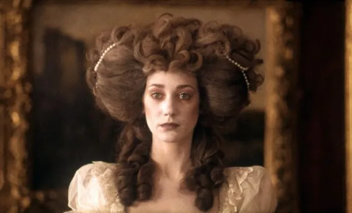

Barry Lyndon : La précision cinématographique révolutionnaire
Découvrez comment le chef-d'œuvre de Kubrick, "Barry Lyndon", a posé les bases du maquillage naturel au cinéma, annonçant l'ère du maquillage virtuel actuelle.
Par Alice Frelin
Publié le 5 janvier 2025 à 18h15
Photogramme de film Barry Lyndon (1975)
Un chef-d'œuvre de la lumière naturelle
Dans l'histoire du maquillage cinématographique, "Barry Lyndon" de Stanley Kubrick, sorti en 1975, a révolutionné l'art du maquillage à l'écran. Ce film a marqué un tournant dans l'approche du maquillage, préfigurant l'ère du maquillage virtuel et des filtres beauté que nous connaissons aujourd'hui
Kubrick, perfectionniste notoire, a exigé un maquillage aussi naturel que possible, anticipant ainsi la tendance actuelle du "no-makeup makeup". Cette approche révolutionnaire pour l'époque peut être considérée comme la préhistoire du maquillage virtuel moderne.
Le réalisateur a utilisé des techniques innovantes pour son époque, comme l'éclairage uniquement à la bougie pour certaines scènes. Cela nécessitait un maquillage délicat capable de sublimer la beauté naturelle des acteurs sous cette lumière douce.
Le maquillage habituel des années 70 :

Affiche publicitaire pour Revlon© (1970)
Le maquillage dans le film :
Affiche publicitaire pour Revlon© (1970)
Une technologie avant-gardiste
Cette recherche d'authenticité est un précurseur direct des filtres de réalité augmentée actuels qui visent à améliorer l'apparence tout en maintenant un aspect naturel.
Le maquillage dans Barry Lyndon était si discret qu'il semblait inexistant, une prouesse qui annonçait l'ère où les modifications sont imperceptibles mais efficaces. Cette approche minimaliste contraste fortement avec les pratiques de l'époque, où le maquillage était souvent lourd et visible.
Aujourd'hui, à l'ère du maquillage virtuel et des technologies numériques, l'approche de Kubrick semble prophétique. Les technologies actuelles permettent d'obtenir un look naturel et parfait sans recourir à des produits physiques, réalisant ainsi la vision de Kubrick d'un maquillage invisible mais transformateur.

Avant et après l’utilisation d’un filtre de beauté - Persona App
Barry Lyndon nous rappelle que la quête d'un maquillage naturel n'est pas nouvelle. Ce film visionnaire a posé les bases d'une approche qui, des décennies plus tard, trouverait son apogée dans les technologies de maquillage virtuel que nous utilisons aujourd'hui.
En regardant ce chef-d'œuvre aujourd'hui, on ne peut s'empêcher de penser que Kubrick avait entrevu le futur du maquillage : un art subtil, presque invisible, mais capable de transformer profondément l'apparence à l'écran.